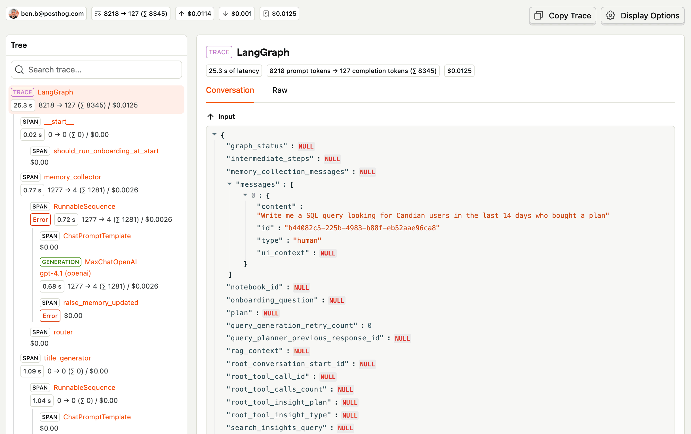
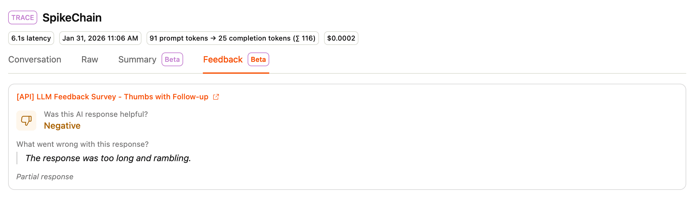

Start Your Copilot on One Screen
Define the job, read the traces, and earn the right to put the chat box everywhere.
A chat box looks small. The implied scope is enormous.
Put one in your product and customers will ask it everything: sensible questions, unsupported requests, and things nobody on your team has considered. A placeholder saying “Ask me anything” is certainly one way to write a roadmap.
I would start on one screen, with a few specific jobs.
On a call-analysis page, for example, a job might be: explain why this call failed, show the supporting evidence, and identify what needs checking next. That is specific enough to build evals and test cases around. “Help users analyse calls” leaves rather more room for everyone to declare victory.
Reuse your MCP capabilities where they fit. Add richer tools where the job requires them. The in-app experience also gives you context: the selected call, the current filters, the thing the customer is looking at.
Customers will assume you have that context. If they ask about “this call” and you ask them to paste its ID, they have just discovered that your helpful colleague cannot see the screen.
Instrument the conversations and tool calls with PostHog AI observability. As the PM, review a sample of traces daily. Follow the conversation through corrections, repeated requests, failures, and apparent successes. Find where the customer changes direction or gives up.

Collect two kinds of feedback: whether the task was completed, and thumbs up or down on individual responses. A pleasant answer and a finished job are different things.

Turn recurring failures into evals and test cases. Improve the tools, instructions, or context handling, then check those cases again.
Expand across the app once the first jobs work reliably. Carry the relevant page context with you.
The chat box can go everywhere later. First, make it useful somewhere.